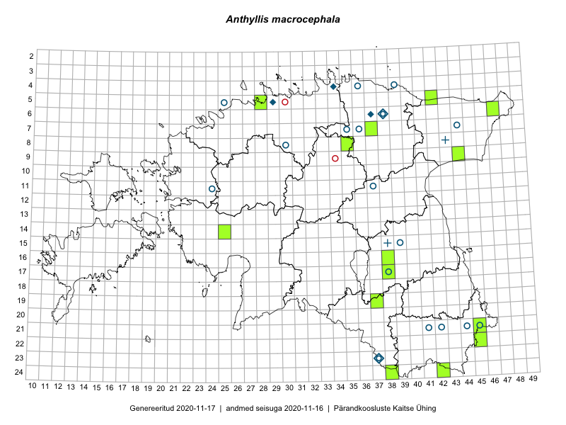

Anthyllis macrocephala — paljulehine koldrohi
Fabaceae :: Anthyllis macrocephala Wend. (48); Anthyllis polyphylla (DC.) Don. (4)

Kaart põhineb 52 kirjel:
herbaareksemplare 52
Taime kaasaegsed ja ajaloolised leiukohad asuvad 34 ruudus.
Tingmärgid ja leidudega ruutude arvud periooditi uues (u) ja 2005 andmestikus (v)
| █ | vahemik | u1 | v2 |
|---|---|---|---|
| █ | 2006–2020 | 14 | – |
| ◆/◇ | 1971–2005 | 5 | 2 |
| ○ | 1921–1970 | 17 | 15 |
| + | kuni 1920 | 2 | 2 |
| × | hävinud | – | 0 |
| ? | kaheldav | – | 0 |
| Ruut | Leidja(d) | Leiuaeg | Kirje |
|---|---|---|---|
| 17-38 | Peedu Saar, Ott Luuk | 2019-07-15 | TAA0149389: Anthyllis macrocephala Wend. |
| 09-44 | Peedu Saar | 2018-07-19 | TAA0146836: Anthyllis macrocephala Wend. |
| 21-45 | Toomas Kukk | 2018-06-24 | TAA0146642: Anthyllis macrocephala Wend. |
| 21-45 | Toomas Kukk | 2018-06-24 | TAA0146643: Anthyllis macrocephala Wend. |
| 14-25 | Toomas Kukk, Oliver Parrest | 2016-07-08 | TAA0139490: Anthyllis macrocephala Wend. |
| 14-25 | Toomas Kukk, Oliver Parrest | 2016-07-08 | TAA0139491: Anthyllis macrocephala Wend. |
| 19-37 | Maret Gerz, Liina Oja | 2016-06-16 | TAA0133758: Anthyllis macrocephala Wend. |
| 22-45 | Jaak-Albert Metsoja | 2016-06-15 | TAA0133822: Anthyllis macrocephala Wend. |
| 24-42 | Eerik Leibak, Rein Kalamees | 2016-06-14 | TAA0138429: Anthyllis macrocephala Wend. |
| 05-42 | Thea Kull, Eerik Leibak | 2015-07-22 | TAA0116939: Anthyllis macrocephala Wend. |
| 06-47 | Jaak-Albert Metsoja | 2015-07-22 | TAA0140561: Anthyllis macrocephala Wend. |
| 24-38 | Eeva-Maria Jeletsky, Tarmo Niitla | 2015-07-16 | TAA0119366: Anthyllis macrocephala Wend. |
| 08-35 | Jana-Maria Habicht | 2015-07-14 | TAM0117720: Anthyllis macrocephala Wend. |
| 05-28 | Erkki Otsman, Sergei Smirnov | 2015-07-06 | TAA0140324: Anthyllis macrocephala Wend. |
| 16-38 | Thea Kull, Eerik Leibak | 2015-07-03 | TAA0116936: Anthyllis macrocephala Wend. |
| 07-37 | Elle Rajandu, Karin Kikas | 2015-06-02–2015-06-05 | TAA0143070: Anthyllis macrocephala Wend. |
| 06-38 | Egle Puidet | 2004-06-24 | TU258168: Anthyllis macrocephala Wend. |
| 06-38 | Egle Puidet | 2004-06-24 | TU258169: Anthyllis macrocephala Wend. |
| 06-38 | Egle Puidet | 2004-06-24 | TU258170: Anthyllis macrocephala Wend. |
| 06-38 | Egle Puidet | 2004-06-24 | TU258171: Anthyllis macrocephala Wend. |
| 04-34 | Egle Puidet | 2004-06-24 | TU258172: Anthyllis macrocephala Wend. |
| 04-34 | Egle Puidet | 2004-06-24 | TU258173: Anthyllis macrocephala Wend. |
| 04-34 | Egle Puidet | 2004-06-24 | TU258174: Anthyllis macrocephala Wend. |
| 04-34 | Egle Puidet | 2004-06-24 | TU258175: Anthyllis macrocephala Wend. |
| 04-34 | Egle Puidet | 2004-06-24 | TU258176: Anthyllis macrocephala Wend. |
| 05-29 | H. Aasamaa | 1999-06-17 | TAM0126979: Anthyllis macrocephala Wend. |
| 06-37 | E. Kunberg | 1977-07-21 | TU271333: Anthyllis macrocephala Wend. |
| 23-37 | L. Pihlapuu | 1971-07-06 | TU271331: Anthyllis polyphylla (DC.) Don. |
| 21-45 | L. Pihlapuu | 1969-06-26 | TU271329: Anthyllis polyphylla (DC.) Don. |
| 15-39 | Vilma Kuusk | 1967-06-21 | TAA0074409: Anthyllis macrocephala Wend. |
| 17-38 | Silvi Pärn, Agnes Ojaveer | 1962-07-03 | TAA0074411: Anthyllis macrocephala Wend. |
| 21-44 | L. Pihlapuu | 1959-06-17 | TU271330: Anthyllis polyphylla (DC.) Don. |
| 07-35 | Visolde Puusepp, Alma Saare | 1958-08-04 | TAA0074414: Anthyllis macrocephala Wend. |
| 07-35 | Linda Viljasoo, Agnes Ojaveer | 1958-08-04 | TAA0074415: Anthyllis macrocephala Wend. |
| 08-30 | Silvia Krastin | 1958-07-07 | TAA0074412: Anthyllis macrocephala Wend. |
| 21-42 | Maret Kask | 1957-06-19 | TAA0074416: Anthyllis macrocephala Wend. |
| 21-41 | A. Dessler | 1957-06-15 | TAA0074421: Anthyllis macrocephala Wend. |
| 11-24 | Silvia Krastin | 1955-07 | TAA0074408: Anthyllis macrocephala Wend. |
| 21-42 | Helga Tamm | 1954-06-20 | TAA0074406: Anthyllis macrocephala Wend. |
| 11-37 | Albert Üksip | 1942-07-20 | TAA0074407: Anthyllis macrocephala Wend. |
| 23-37 | L. Kaldma | 1938-07-09 | TAA0074417: Anthyllis macrocephala Wend. |
| 23-37 | L. Kaldma | 1938-07-09 | TAA0074418: Anthyllis macrocephala Wend. |
| 23-37 | L. Kaldma | 1938-07-09 | TU271337: Anthyllis polyphylla (DC.) Don. |
| 05-25 | Albert Üksip | 1938-06-08 | TU271338: Anthyllis macrocephala Wend. |
| 04-39 | Gustav Vilbaste | 1925-07-07 | TAA0074419: Anthyllis macrocephala Wend. |
| 07-36 | Th. Nenjukov | 1923-08-08 | TAM0052566: Anthyllis macrocephala Wend. |
| 07-36 | G. Avajev | 1923-08-08 | TU271332: Anthyllis macrocephala Wend. |
| 07-44 | R. Käbin | 1922-07-12 | TU271336: Anthyllis macrocephala Wend. |
| 04-36 | J. Kuulberg | 1922-07-11 | TU271335: Anthyllis macrocephala Wend. |
| 06-38 | G. Mechmershausen | 1921-07-16 | TU271334: Anthyllis macrocephala Wend. |
| 15-38 | 1890-07-02 | TAA0074422: Anthyllis macrocephala Wend. | |
| 08-43 | Theodor Lackschewitz | 1874 | TAA0074420: Anthyllis macrocephala Wend. |
Ruutude arv uue atlase andmekogu järgi. Muuhulgas arvestab vanemat herbaariumi, 2005. aasta atlase välitöölehtedelt uuesti digitaliseeritud andmeid jne. Uue atlase andmekogust pärinevad andmed on kaardile kantud siniste sümbolitega.↩︎
Ruutude arv 2005. aasta atlase (Kukk, T., Kull, T., Eesti taimede levikuatlas. Eesti Maaülikool, Põllumajandus- ja Keskkonnainstituut, Tartu, 2005) järgi. Andmeallikana on kasutatud levik.exe programmi, kus igas ruudus on registreeritud vaid uusim leid. Seetõttu on vanemate perioodide kohta andmed puudulikud. Kasutatud levik.exe andmestikus leidub mõningaid kõrvalekaldeid atlase trükis ilmunud versioonist, sagedamini tarnade ja käpaliste seas. Lisaks leidub selles andmestikus valik liike (peamiselt väheste leidudega tulnuktaimed), mille kaarte trükis ei avaldatud. Vana atlase andmed ruutudest, milles ei ole uue atlase andmekogus leide enne 2006. aastat, on kaardil esitatud punaste sümbolitega. Vana atlase andmetel hävinud ja kaheldavaid leiukohti pole hilisemate (taas)leidude põhjal korrigeeritud.↩︎